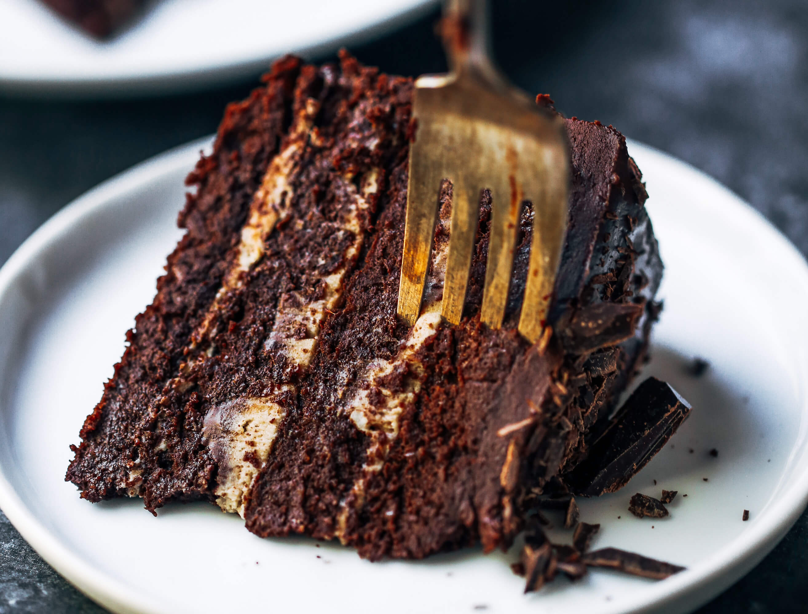

Paleo Chocolate Cake Recipe
Indulge in the luscious delight of this fudgy cake, crafted to satisfy your deepest chocolate cravings. With a delectable blend of Almond Breeze Unsweetened Vanilla Almond milk, velvety coconut flour, and the finest Blue Diamond Almond Flour, every bite is a guilt-free sensation that will leave you longing for more. Treat yourself to this heavenly creation and experience pure chocolaty bliss like never before.
Ingredients
- 1 (14 ounce) can coconut cream
- 1 1/2 cups dairy-free chocolate chips
- pinch of salt
- nonstick spray
- 3/4 cup virgin coconut oil, melted and cooled
- 1 3/4 cups coconut sugar
- 4 large eggs, at room temperature
- 1 tablespoon pure vanilla extract
- 1 tablespoon apple cider vinegar
- 1 cup Almond Breeze Unsweetened Vanilla Almondmilk
- 3 cups Blue Diamond Almond Flour
- 3/4 cup high-quality unsweetened cocoa powder
- 1/4 cup coconut flour
- 2 teaspoons baking soda
- 1/2 teaspoon salt
Directions
- First begin by making your frosting: Add coconut cream, chocolate chips, and a pinch of salt to a small pot and place over low heat. Whisk until melted. Transfer to a bowl, cover with plastic wrap and place in the refrigerator to harden for 6 hours or until hard. Overnight is best!
- Preheat the oven to 350 degrees F (175 degrees C). Line the bottom of 3 round cake pans with parchment paper rounds. Spray parchment paper and side of pan with nonstick cooking spray (otherwise cake is likely to stick).
- In a large bowl, mix together melted and cooled coconut oil, coconut sugar, eggs, vanilla, and apple cider vinegar with an electric mixer until smooth. Add Almond Breeze Unsweetened Vanilla Almondmilk and beat once more until mixture is well incorporated.
- In a separate bowl, whisk Blue Diamond Almond Flour, cocoa powder, coconut flour, baking soda, and 1/2 teaspoon salt together. Add the dry ingredients to the wet ingredients and mix well. Mixture will be on the thicker side. Divide batter evenly between pans and spread out with a spatula to smooth the tops.
- Bake in the preheated oven until a tester comes out clean or with just a few crumbs attached, rotating the pans halfway through baking, 20 to 30 minutes.
- Let cake cool in the pan for 15 minutes then transfer to the fridge to finish cooling completely. Allow cake to cool in the fridge for at least 1 hour before removing from the pan and frosting. The cake should be room temperature when you frost it. This is very important. Cake can be made a day ahead if you’d like!
- Finish making your frosting: Scoop the hardened chocolate coconut cream frosting mixture into a large bowl. Use a hand mixer or an electric mixer to beat frosting until peaks form and it looks nice, fluffy and creamy. Use immediately!
Nutrition Facts (per serving)
- Calories: 506
- Fat: 32g
- Carbs: 53g
- Protein: 8g
Indulge in the rich and decadent flavors of our Paleo Chocolate Cake, a delightful treat that satisfies your chocolate cravings without compromising on health. Each moist and luscious bite, crafted with wholesome ingredients and infused with the essence of pure cocoa, promises to transport you to a realm of pure bliss. We hope you enjoy this guilt-free indulgence and create cherished moments with every forkful.